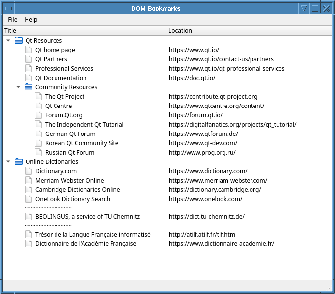

DOM Bookmarks Application
Provides a reader for XML Bookmark Exchange Language files.
The DOM Bookmarks Application provides a reader for XML Bookmark Exchange Language (XBEL) files that uses Qt's DOM-based XML API to read and parse the files. The QXmlStream Bookmarks Example provides an alternative way to read this type of file.

The XbelTree Class Definition
The XbelTree class has functions for reading and writing to the filesystem. It inherits from the QTreeWidget class, contains the model for the displaying of the bookmarks, and allows it to be edited.
class XbelTree : public QTreeWidget { Q_OBJECT public: explicit XbelTree(QWidget *parent = nullptr); bool read(QIODevice *device); bool write(QIODevice *device) const; protected: #if QT_CONFIG(clipboard) && QT_CONFIG(contextmenu) void contextMenuEvent(QContextMenuEvent *event) override; #endif private slots: void updateDomElement(const QTreeWidgetItem *item, int column); private: void parseFolderElement(const QDomElement &element, QTreeWidgetItem *parentItem = nullptr); QTreeWidgetItem *createItem(const QDomElement &element, QTreeWidgetItem *parentItem = nullptr); QDomDocument domDocument; QIcon folderIcon; QIcon bookmarkIcon; };
The XbelTree Class Implementation
The XbelTree constructor accepts a QWidget within which it is placed. The folderIcon is set to QIcon::Normal mode where the pixmap is only displayed when the user is not interacting with the icon. The QStyle::SP_DirClosedIcon, QStyle::SP_DirOpenIcon, and QStyle::SP_FileIcon correspond to standard pixmaps that follow the style of your GUI.
XbelTree::XbelTree(QWidget *parent) : QTreeWidget(parent) { header()->setSectionResizeMode(QHeaderView::Stretch); setHeaderLabels({tr("Title"), tr("Location")}); folderIcon.addPixmap(style()->standardPixmap(QStyle::SP_DirClosedIcon), QIcon::Normal, QIcon::Off); folderIcon.addPixmap(style()->standardPixmap(QStyle::SP_DirOpenIcon), QIcon::Normal, QIcon::On); bookmarkIcon.addPixmap(style()->standardPixmap(QStyle::SP_FileIcon)); }
The read() function opens the given QIODevice using QDomDocument::setContent. If it succeeds opening the file and the top level headers are verified, the contents of the class is cleared before the file contents is parsed by iterating all the top level XML nodes and calling parseFolderElement() on each of them.
bool XbelTree::read(QIODevice *device) { QDomDocument::ParseResult result = domDocument.setContent(device, QDomDocument::ParseOption::UseNamespaceProcessing); if (!result) { QMessageBox::information(window(), tr("DOM Bookmarks"), tr("Parse error at line %1, column %2:\n%3") .arg(result.errorLine) .arg(result.errorColumn) .arg(result.errorMessage)); return false; } QDomElement root = domDocument.documentElement(); if (root.tagName() != "xbel") { QMessageBox::information(window(), tr("DOM Bookmarks"), tr("The file is not an XBEL file.")); return false; } else if (root.hasAttribute(versionAttribute) && root.attribute(versionAttribute) != "1.0"_L1) { QMessageBox::information(window(), tr("DOM Bookmarks"), tr("The file is not an XBEL version 1.0 " "file.")); return false; } clear(); disconnect(this, &QTreeWidget::itemChanged, this, &XbelTree::updateDomElement); QDomElement child = root.firstChildElement(folderElement); while (!child.isNull()) { parseFolderElement(child); child = child.nextSiblingElement(folderElement); } connect(this, &QTreeWidget::itemChanged, this, &XbelTree::updateDomElement); return true; }
The parseFolderElement() function handles the different element types and calls itself recursively if the element is a subfolder.
void XbelTree::parseFolderElement(const QDomElement &element, QTreeWidgetItem *parentItem) { QTreeWidgetItem *item = createItem(element, parentItem); QString title = element.firstChildElement(titleElement).text(); if (title.isEmpty()) title = tr("Folder"); item->setFlags(item->flags() | Qt::ItemIsEditable); item->setIcon(0, folderIcon); item->setText(0, title); bool folded = (element.attribute(foldedAttribute) != "no"_L1); item->setExpanded(!folded); constexpr char16_t midDot = u'\xB7'; static const QString dots = QString(30, midDot); QDomElement child = element.firstChildElement(); while (!child.isNull()) { if (child.tagName() == folderElement) { parseFolderElement(child, item); } else if (child.tagName() == bookmarkElement) { QTreeWidgetItem *childItem = createItem(child, item); QString title = child.firstChildElement(titleElement).text(); if (title.isEmpty()) title = tr("Folder"); childItem->setFlags(item->flags() | Qt::ItemIsEditable); childItem->setIcon(0, bookmarkIcon); childItem->setText(0, title); childItem->setText(1, child.attribute(hrefAttribute)); } else if (child.tagName() == "separator"_L1) { QTreeWidgetItem *childItem = createItem(child, item); childItem->setFlags(item->flags() & ~(Qt::ItemIsSelectable | Qt::ItemIsEditable)); childItem->setText(0, dots); } child = child.nextSiblingElement(); } }
The write() function saves the domDocument to the given QIODevice using QDomDocument::save.
bool XbelTree::write(QIODevice *device) const { const int IndentSize = 4; QTextStream out(device); domDocument.save(out, IndentSize); return true; }
The MainWindow Class Definition
The MainWindow class is a subclass of QMainWindow, with a File menu and a Help menu.
class MainWindow : public QMainWindow { Q_OBJECT public: MainWindow(); public slots: void open(); void saveAs(); void about(); private: void createMenus(); XbelTree *xbelTree; };
The MainWindow Class Implementation
The MainWindow constructor instantiates the member XbelTree object, and sets its header with a QStringList object, labels. The constructor also invokes createMenus() to set up the menus. The statusBar() is used to display the message "Ready".
MainWindow::MainWindow() { xbelTree = new XbelTree; setCentralWidget(xbelTree); createMenus(); statusBar()->showMessage(tr("Ready")); setWindowTitle(tr("DOM Bookmarks")); const QSize availableSize = screen()->availableGeometry().size(); resize(availableSize.width() / 2, availableSize.height() / 3); }
The createMenus() function populates the menus and sets keyboard shortcuts.
void MainWindow::createMenus() { QMenu *fileMenu = menuBar()->addMenu(tr("&File")); QAction *openAct = fileMenu->addAction(tr("&Open..."), this, &MainWindow::open); openAct->setShortcuts(QKeySequence::Open); QAction *saveAsAct = fileMenu->addAction(tr("&Save As..."), this, &MainWindow::saveAs); saveAsAct->setShortcuts(QKeySequence::SaveAs); QAction *exitAct = fileMenu->addAction(tr("E&xit"), this, &QWidget::close); exitAct->setShortcuts(QKeySequence::Quit); menuBar()->addSeparator(); QMenu *helpMenu = menuBar()->addMenu(tr("&Help")); helpMenu->addAction(tr("&About"), this, &MainWindow::about); helpMenu->addAction(tr("About &Qt"), qApp, &QApplication::aboutQt); }
The open() function enables the user to open an XBEL file using QFileDialog. A warning message is displayed along with the fileName and errorString if the file cannot be read or if there is a parse error. If it succeeds it calls XbelTree::read().
void MainWindow::open() { QFileDialog fileDialog(this, tr("Open Bookmark File"), QDir::currentPath()); fileDialog.setMimeTypeFilters({"application/x-xbel"_L1}); if (fileDialog.exec() != QDialog::Accepted) return; const QString fileName = fileDialog.selectedFiles().constFirst(); QFile file(fileName); if (!file.open(QFile::ReadOnly | QFile::Text)) { QMessageBox::warning(this, tr("DOM Bookmarks"), tr("Cannot read file %1:\n%2.") .arg(QDir::toNativeSeparators(fileName), file.errorString())); return; } if (xbelTree->read(&file)) statusBar()->showMessage(tr("File loaded"), 2000); }
The saveAs() function displays a QFileDialog, prompting the user for a fileName. Similar to the open() function, this function also displays a warning message if the file cannot be written to. If this succeeds it calls XbelTree::write().
void MainWindow::saveAs() { QFileDialog fileDialog(this, tr("Save Bookmark File"), QDir::currentPath()); fileDialog.setAcceptMode(QFileDialog::AcceptSave); fileDialog.setDefaultSuffix("xbel"_L1); fileDialog.setMimeTypeFilters({"application/x-xbel"_L1}); if (fileDialog.exec() != QDialog::Accepted) return; const QString fileName = fileDialog.selectedFiles().constFirst(); QFile file(fileName); if (!file.open(QFile::WriteOnly | QFile::Text)) { QMessageBox::warning(this, tr("DOM Bookmarks"), tr("Cannot write file %1:\n%2.") .arg(QDir::toNativeSeparators(fileName), file.errorString())); return; } if (xbelTree->write(&file)) statusBar()->showMessage(tr("File saved"), 2000); }
The about() function displays a QMessageBox with a brief description of the example.
void MainWindow::about() { QMessageBox::about(this, tr("About DOM Bookmarks"), tr("The <b>DOM Bookmarks</b> example demonstrates how to " "use Qt's DOM classes to read and write XML " "documents.")); }
See the XML Bookmark Exchange Language Resource Page for more information about XBEL files.